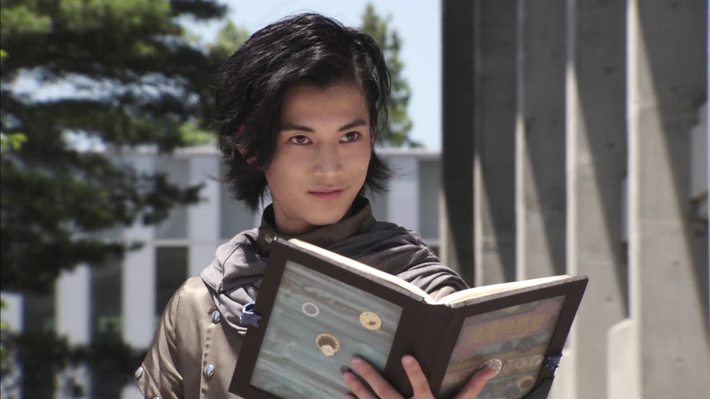

Kamen Rider Zi-O
Tokiwa Sougo dalam form (bentuk) Kamen Rider Zi-O
Kamen Rider Zi-O adalah Kamen Rider terakhir dari Era Heisei yang berada pada posisi urutan ke-20, dan berasal dari tahun 2018. Kamen Rider ini bertemakan waktu sehingga memiliki form (bentuk/motif dari Kamen Rider) yang menyerupai Jam. Pengguna Kamen Rider Zi-O saat ini adalah Tokiwa Sougo. Sougo merupakan seorang Siswa SMA biasa, namun ia ditakdirkan melalui impiannya untuk menjadi Raja sejak ia lahir. Sougo sangat bersemangat untuk mencapai impian nya menjadi Sang Raja, karena harapannya Sougo ingin menjadi Raja yang baik, yang bisa membahagiakan semua rakyatnya.
Tokiwa Sougo
Namun ia diberi tahu oleh teman-temannya yang berasal dari masa depan (tahun 2068) yaitu Geiz dan Tsukuyomi bahwa mereka melihat masa depan dimana Sougo menjadi Raja Iblis yang paling kejam dalam sejarah. Sougo juga memiliki 1 teman lagi yang menjadi penuntunnya dalam mengatasi masalah ini, yaitu Woz. Sougo pun akhirnya mempunyai misi bersama teman-temannya (yaitu Geiz, Tsukuyomi, dan Woz) untuk melenyapkan masa depan yang kelam itu, agar Sougo bisa menjadi Raja yang baik kepada semua rakyatnya di masa depan yang akan datang (seperti apa yang diharapkan Sougo).
 Raja Iblis dalam form (bentuk) Ohma Zi-O
Raja Iblis dalam form (bentuk) Ohma Zi-O
Untuk menyelesaikan misi inipun tidaklah mudah, Sougo diharuskan mengumpulkan masing-masing kekuatan Pendahulu Kamen Rider Heisei sebelumnya yang berjumlah 19 untuk membantunya dalam mengembalikan timeline waktu yang normal. Untuk mengumpulkannya, Sougo harus menjelajahi waktu menggunakan time machine (mesin waktu raksasa berbentuk robot yang dibawakan oleh Geiz dan Tsukuyomi dari tahun 2068) dan menemui masing-masing Pendahulu Kamen Rider era Heisei yang berada pada tahun 2000 hingga 2017.
Adapun nama-nama Kamen Rider Heisei yang harus ditemui Sougo adalah sebagai berikut:
- Godai Yuusuke sebagai Kamen Rider Kuuga yang berasal dari tahun 2000
- Tsugami Shouichi sebagai Kamen Rider Agito yang berasal dari tahun 2001
- Kido Shinji sebagai Kamen Rider Ryuki yang berasal dari tahun 2002
- Inui Takumi sebagai Kamen Rider Faiz yang berasal dari tahun 2003
- Kenzaki Kazuma sebagai Kamen Rider Blade yang berasal dari tahun 2004
- Hidaka Hitoshi sebagai Kamen Rider Hibiki yang berasal dari tahun 2005
- Tendou Souji sebagai Kamen Rider Kabuto yang berasal dari tahun 2006
- Nogami Ryoutarou sebagai Kamen Rider Den-O yang berasal dari tahun 2007
- Kurenai Wataru sebagai Kamen Rider Kiva yang berasal dari tahun 2008
- Kadoya Tsukasa sebagai Kamen Rider Decade yang berasal dari tahun 2009
- Hidari Shoutarou dan Philip sebagai Kamen Rider Double yang berasal dari tahun 2009
- Hino Eiji sebagai Kamen Rider OOO yang berasal dari tahun 2010
- Kisaragi Gentarou sebagai Kamen Rider Fourze yang berasal dari tahun 2011
- Soma Haruto sebagai Kamen Rider Wizard yang berasal dari tahun 2012
- Kazuraba Kouta sebagai Kamen Rider Gaim yang berasal dari tahun 2013
- Tomari Shinnosuke sebagai Kamen Rider Drive yang berasal dari tahun 2014
- Tenkuuji Takeru sebagai Kamen Rider Ghost yang berasal dari tahun 2015
- Houjou Emu sebagai Kamen Rider Ex-Aid yang berasal dari tahun 2016
- Kiryuu Sento sebagai Kamen Rider Build yang berasal dari tahun 2017
Lalu setelah Sougo berhasil mengumpulkan ke-19 kekuatan masing-masing Kamen Rider Heisei, maka Sougo pun sudah siap bertarung untuk melawan musuh terakhirnya yang telah merusak alur kejadian waktu timeline yang ditempuh olehnya sehingga membuat Sougo menjadi Raja Iblis di masa depan. Musuh terakhirnya ini adalah Schwartz, ia merupakan Pemimpin dari Time Jacker yang memiliki kemampuan untuk merubah alur kejadian di timeline waktu tertentu yang mempengaruhi masa depan yang akan terjadi.
Setelah Sougo berhasil mengalahkan Schwartz berkat bantuan dari para pendahulu Kamen Rider sebelumnya, akhirnya timeline waktu yang telah rusak itu kini telah direset dan menjadi normal kembali, sehingga takdir Sougo di masa depan yang menjadi Raja Iblis sudah tiada. Dan Sougo pun akhirnya berhasil mengembalikan teman-temannya dan bisa hidup bahagia dengan kembali normal bersama teman-temannya tanpa adanya kerusakan timeline waktu.
Teman Kamen Rider Zi-O
Kamen Rider Zi-O (Tokiwa Sougo) memiliki teman-teman yang selalu siap membantunya di dalam keadaan apapun, baik dalam keadaan senang ataupun susah, atau bahkan untuk memberantas kejahatan sebagai misi utamanya. Saat ini Sougo memiliki 3 teman terbaiknya (bisa dibilang sahabat):
- Myokouin Geiz sebagai Kamen Rider Geiz
- Tsukuyomi sebagai Kamen Rider Tsukuyomi
- Woz sebagai Kamen Rider Woz
Kamen Rider Geiz
Myoukouin Geiz dalam form (bentuk) Kamen Rider Geiz
Myoukouin Geiz adalah seorang pemuda pria yang memiliki rambut pendek dan memakai pakaian modern berwarna hitam yang berasal dari tahun 2068. Ia merupakan pengguna dari Kamen Rider Geiz. Pada tahun 2068, ia melihat sesosok Raja Iblis yang sangat kejam, yang memusnahkan segala hal yang ada di depan matanya. Geiz pun kehilangan banyak teman nya karena ulah Raja Iblis tersebut. Dan Geiz pun mengetahui bahwa ternyata sosok dibalik Raja Iblis tersebut adalah Tokiwa Sougo. Maka dari itulah Geiz datang pada masa waktu tahun 2018 untuk menemui Sougo dan berniat mengalahkannya, agar kenyataan yang Geiz lihat pada tahun 2068 tidak terjadi lagi. Namun ketika diketahui bahwa Sougo tidak seburuk apa yang dipikirkan Geiz, akhirnya Geiz ikut membantu Sougo dalam menemukan kebenaran untuk melawan penjahat yang sesungguhnya.
Myoukouin Geiz
Namun na'as, Geiz harus mati mengorbankan nyawanya demi melindungi Sougo untuk mengalahkan Schwartz, setelah mendapatkan serangan yang cukup fatal darinya. Sougo pun tidak bisa membiarkan hal itu terjadi, amarah bangkit dalam diri Sougo dan akhirnya berhasil mengalahkan Schwartz. Dan akhirnya Geiz bisa dihidupkan kembali oleh Sougo melalui waktu yang telah direset oleh Sougo, setelah Schwartz lenyap dari dunia yang ditempatinya.
Kamen Rider Woz
Woz dalam form (bentuk) Kamen Rider Woz
Woz adalah seorang pria yang memiliki rambut gondrong dan memakai jubah berwarna coklat yang selalu membawa buku (kitab) kemanapun ia pergi. Ia merupakan pengguna dari Kamen Rider Woz. Woz tidak diketahui berasal dari tahun berapa, namun diketahui ia berada pada timeline waktu tahun 2068 bersama Geiz dan Tsukuyomi. Buku yang selalu dibawa oleh Woz adalah buku yang berisi kisah perjalanan Tokiwa Sougo berdasarkan waktu yang terus berjalan, baik itu dari masa lalu, masa kini, ataupun masa depan.

Woz
Woz selalu memanggil Sougo sebagai "Raja Iblisku" setiap bertemu dengannya. Woz disini berperan sebagai orang yang akan memandu Sougo menuju jalan kebenaran yang sesungguhnya, serta menjadi pelindung dan pencegah dari Geiz yang ingin mengalahkan Sougo.
Kamen Rider Tsukuyomi
Tsukuyomi dalam form (bentuk) Kamen Rider Tsukuyomi
Tsukuyomi adalah seorang pemuda wanita yang memiliki rambut sepanjang pinggang dan memakai dress serba putih yang juga berasal dari tahun 2068. Ia merupakan pengguna dari Kamen Rider Tsukuyomi. Tsukuyomi merupakan teman seperjuangan Geiz dari timeline waktu yang sama, dan juga berasal dari satu tempat yang sama. Ia juga mengalami hal yang serupa seperti Geiz, mulai dari kehilangan teman-temannya, kehilangan tempat tinggal, hingga kehilangan segala hal yang disayanginya yang disebabkan oleh Raja Iblis. Namun Tsukuyomi tidak seperti Geiz, ia berperan sebagai penasihat dan peningat Sougo agar tidak menggunakan kekuatan Raja Iblis.
Tsukuyomi
Faktanya, Tsukuyomi merupakan adik dari Schwartz yang merupakan orang yang merusak timeline waktu Tokiwa Sougo. Tetapi Tsukuyomi berhasil kabur dari Kakaknya, dan mulai berteman dengan Sougo untuk menyelesaikan masalah besar ini agar keadaan bisa normal kembali.
Musuh Kamen Rider Zi-O
Selain memiliki teman-teman yang baik, Sougo juga memiliki musuh-musuh yang siap menyerangnya kapan saja. Musuh yang dihadapi oleh Sougo merupakan grup yang berisi 3 orang yang bernama Time Jacker. Time Jacker sendiri merupakan sekumpulan orang yang masing-masing anggotanya memiliki kemampuan untuk mengendalikan waktu timeline yang sedang berlangsung, sehingga bisa mempengaruhi apa yang akan terjadi di masa depan dan apa yang telah terjadi di masa lalu. Anggota Time Jacker terdiri dari 3 orang, yaitu:
- Schwartz
- Aura
- Uhr
Selain mereka, terdapat 1 anggota lagi dari Time Jacker namun belum resmi bergabung menjadi Anggota, yaitu Another Woz.
Schwartz
Schwartz adalah seorang pria dewasa yang berpakaian jacket ungu dan hitam dengan rambut yang diarahkan ke belakang. Dia merupakan pemimpin dari grup yang bernama Time Jacker. Ia tidak diketahui berasal dari timeline waktu di tahun berapa, namun tidak bisa dipungkiri bahwa ia sebenarnya adalah kakak dari Tsukuyomi. Tujuan sebenarnya dari Schwartz dalam merusak timeline waktu yang dimiliki oleh Tokiwa Sougo adalah untuk menyelamatkan dunia yang ditempat tinggali oleh Schwartz, yang pada saat itu dunianya akan hancur karena keberadaan para Kamen Rider Heisei di dunia yang lainnya sehingga menyebabkan adanya distorsi timeline waktu yang dimiliki Schwartz. Dunia yang ditempat tinggali oleh Schwartz berbeda dengan dunia yang ditempat tinggali oleh Tokiwa Sougo. Dikarenakan Schwartz memiliki kemampuan untuk menjelajahi timeline waktu, dia akhirnya terus mencari sesosok anak yang sekiranya pantas untuk dijadikan raja olehnya, dan ditemukanlah Sougo pada tahun 2008.
Saat itu Sougo masih merupakan seorang anak kecil, namun Schwartz menciptakan kejadian buruk yang dialami oleh Sougo, yaitu kehilangan kedua orang tuanya yang disebabkan kecelakaan yang telah diskenariokan oleh Schwartz. Dan sebenarnya, impian Sougo untuk menjadi seorang raja adalah kejadian di masa lalu yang dimanipulasi oleh Schwartz. Pada saat itu Schwartz mendatangi dan memberitahu Sougo, bahwa Sougo adalah seorang raja yang ditakdirkan sejak lahir, sehingga Sougo terus-terusan berkeinginan untuk menggapai impiannya menjadi seorang raja. Schwartz menjadikan Sougo sebagai raja palsu, yang sebenarnya hanya untuk tujuannya sendiri, yaitu menyelamatkan dunianya yang akan hancur dan membuat dunia yang ditempat tinggali Sougo menjadi hancur karena pertemuannya dengan para pendahulu Kamen Rider Heisei yang menyebabkan adanya distorsi timeline waktu yang dimiliki Tokiwa Sougo dan para pendahulu Kamen Rider Heisei. Namun Schwartz akhirnya berhasil dikalahkan oleh Sougo yang menyebabkan keberadaannya lenyap.
Aura
Aura adalah seorang pemuda wanita yang berpakaian jacket berwarna biru muda dan memiliki rambut panjang sebahu. Ia merupakan anggota dari Time Jacker setelah Schwartz. Ia juga tidak diketahui berasal dari timeline waktu di tahun berapa, tetapi karena pemilik kemampuan memanipulasi waktu yang pertama dimiliki oleh Schwartz, bisa jadi saat Aura masih menjadi manusia biasa, ia ditawarkan oleh Schwartz untuk bergabung menjadi anggota Time Jacker dengan alih-aih untuk menyelamatkan dunia lalu diberikan kemampuan untuk memanipulasi waktu.
Namun kejadian na'as harus menimpa Aura, ia harus mati mengorbankan dirinya untuk menjadi tameng dari Schwartz saat terjadi pertarungan melawan Sougo dan kawan-kawan. Sebenarnya, kematian Aura dimanipulasi oleh Schwartz untuk melindungi dirinya sebagai pemimpin dari Time Jacker. Aura semata-mata hanya dimanfaatkan oleh Schwartz untuk kepentingannya sendiri.
Uhr
Uhr adalah seorang pemuda pria yang berpakaian jacket berwarna biru dan memiliki wajah yang imut seperti wanita. Ia merupakan anggota lainnya dari Time Jacker setelah Schwartz dan Aura. Ia juga tidak diketahui berasal dari timeline waktu di tahun berapa, tetapi karena pemilik kemampuan memanipulasi waktu yang pertama dimiliki oleh Schwartz, bisa jadi saat Uhr masih menjadi manusia biasa, ia ditawarkan oleh Schwartz untuk bergabung menjadi anggota Time Jacker dengan alih-aih untuk menyelamatkan dunia lalu diberikan kemampuan untuk memanipulasi waktu.
Namun kejadian na'as harus menimpa Uhr, ia harus mati mengorbankan dirinya untuk menjadi tameng dari Schwartz dan Aura saat terjadi pertarungan melawan Sougo dan kawan-kawan. Semasa Uhr menjadi anggota Time Jacker, ia selalu dimanfaatkan oleh Schwartz dan Aura untuk maju duluan ke dalam pertarungan melawan Sougo dan kawan-kawan.
Another Woz
Another Woz adalah seorang pria yang berpakaian serba abu-abu dan juga menggunakan beret di kepalanya. Another Woz diketahui juga memiliki kesamaan seperti Woz (temannya Sougo), hanya saja Another Woz ini berasal dari masa depan yang tidak diketahui dari tahun berapa (yang pasti lebih jauh rentang nya dari tahun 2068) dan datang dari luar angkasa melalui time machine yang lebih modern dibandingkan milik Geiz dan Tsukuyomi. Another Woz juga selalu membawa buku kemanapun dia pergi, bedanya buku yang dimilki Another Woz ini lebih canggih, yang dimana memiliki kemampuan untuk menulis kejadian yang dapat terwujud di masa depan.
Woz (temannya Sougo) juga tidak mengetahui bahwa terdapat keberadaan Woz yang lain, dan melawan Another Woz ini tentu sangat merepotkan. Namun suatu kejadian, saat Another Woz bertemu dengan Time Jacker, ia ditawarkan oleh Schwartz untuk ikut bergabung dengan organisasinya. Another Woz pun ikut bergabung dengan memberikan syarat kepada Schwartz, yaitu untuk mendapatkan kekuatan dari sang Raja Iblis yang akan dihadapinya, yaitu Tokiwa Sougo.
Suatu ketika, akhirnya Another Woz bertemu dengan Sougo, Geiz dan Woz. Akhirnya mereka pun bertarung. Untungnya, Geiz berhasil memanfaatkan kesempatan dimana ia berhasil menghancurkan buku dari Another Woz. Lalu tiba-tiba tercipta kekuatan gabungan dari Sougo, Geiz, dan Woz yang bernama Trinity, sehingga Another Woz pun berhasil dikalahkan oleh mereka bertiga dan menyebabkan keberadaan Another Woz lenyap.